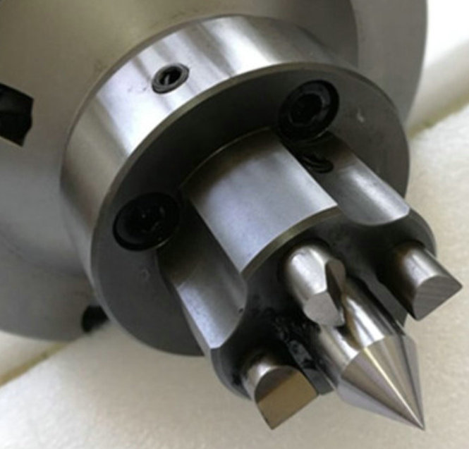
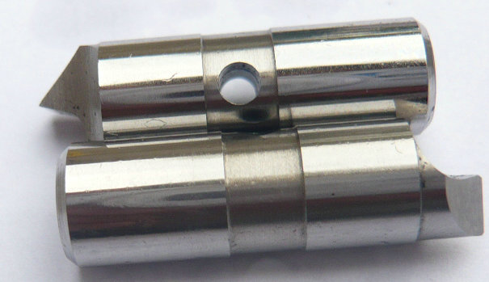
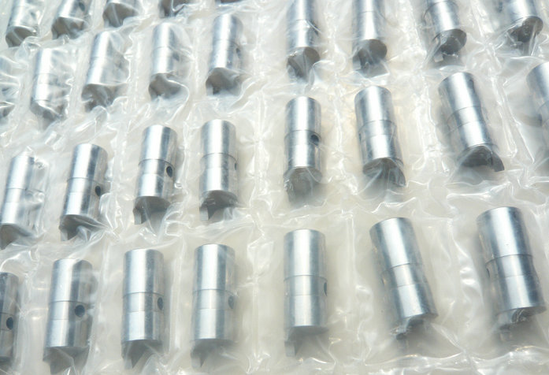

YDTech® Unsere festen Mitnehmerbolzen eignen sich ideal für die Drehbearbeitung, das Schleifen und die Wellenbearbeitung.
im Gegensatz zu beweglichen oder ausfahrbaren Antriebselementen zeichnen sich feste Mitnehmerbolzen durch ihre starre, spielfreie Verbindung aus. Sie werden fest im Grundkörper des Stirnmitnehmers verankert und greifen in dafür vorgesehene Mitnehmerlöcher oder -taschen am Werkstück ein. Dadurch wird eine form- und reibschlüssige Drehmomentübertragung erreicht – ideal für schwere Zerspanungsaufgaben.


Drehbearbeitung: Beim Außen-, Innen- und Plan-Drehen übertragen die Bolzen auch bei hohen Schnittgeschwindigkeiten und unstetigem Schnitt das volle Drehmoment. Sie ermöglichen eine End-to-End-Bearbeitung von Wellen ohne erneutes Spannen.
Schleifen: Im Rund- und spitzenlosen Schleifen ist absolute Rundlaufgenauigkeit gefordert. Unsere Mitnehmerbolzen sind auf minimale Toleranzen geschliffen (≤ 0,005 mm) und sorgen für eine vibrationsfreie Kraftübertragung – auch bei hohen Schleifdrücken.
Wellenbearbeitung:
Getriebewellen, Motorwellen, Turbinenwellen: Für diese rotationssymmetrischen Teile sind Stirnseitenmitnehmer mit festen Bolzen das Spannmittel der Wahl. Die Bolzen greifen in stirnseitige Bohrungen ein und erlauben eine komplette Außenkonturierung in einer Aufspannung.


Unsere festen Mitnehmerbolzen bestehen aus hochlegiertem Einsatz- oder Vergütungsstahl, mehrstufig gehärtet bis zu einer Oberflächenhärte von 60+ HRC. Auf Wunsch fertigen wir sie auch mit Hartmetall-Bestückung oder diamantbeschichtet für die Bearbeitung gehärteter Werkstücke.
Ob Sie Ersatzbolzen für einen vorhandenen Face Driver benötigen, eine defekte Serie nachfertigen lassen müssen oder eine völlig neue Konstruktion realisieren möchten – wir sind der richtige Partner für Sie. Nutzen Sie unsere langjährige Erfahrung in der Präzisionsfertigung und unsere kostengünstigen Produktionsstrukturen in China.
- Startseite
- Produkte
- Kontakt
- Exzentrische Mitnehmerbolzen
- halb versetzte Antriebsstifte
- Zentrische Mitnahmebolzen
- Standard-Mitnehmermesser
- abgefachte Mitnahmebolzen
- Rechtslauf Antriebszapfen
- Linkslauf-Mitnehmerstifte
- Mitnehmerbolzen mit voller Mitnahmebreite
- langlebige Mitnehmerbolzen
- Mitnehmerbolzen mit Meißelkante
- schwimmende Mitnehmer
- Kraftbetätigte Mitnehmerbolzen
- hydraulische Anschlussstifte
- mechanische Anschlussstifte
- bewegliche Mitnehmerbolzen
- feste Anschlussstifte
- Hartmetall Mitnahmebolzen
- Werkzeugstahl S7 Bolzen
- Wechselbare Mitnehmerbolzen
- Mitnehmerstift